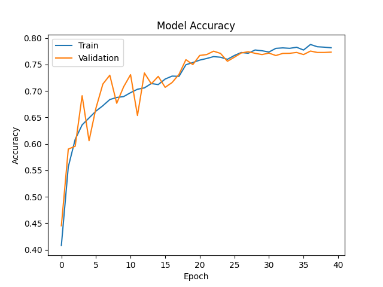
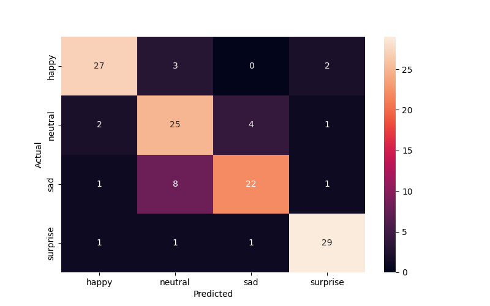
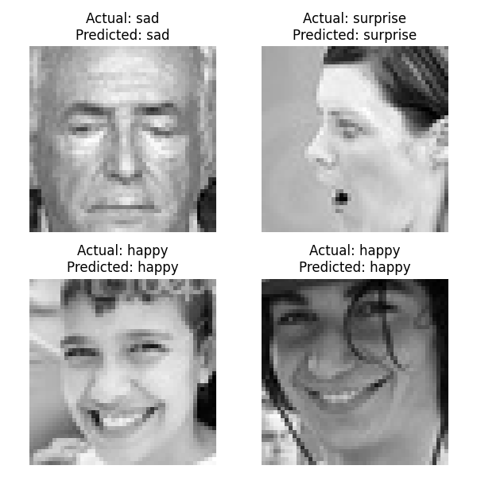

        <html>
        <head><title>Model Summary - 2024-04-10 15:00:42</title></head>
        <body>
        <h1>Model Configuration</h1>
        <pre>model:
  compile:
    learning_rate: 0.001
    optimizer: RMSprop
    optimizer_name: adam
  data:
    color_layers: 1
    color_mode: grayscale
    img_height: 48
    img_width: 48
    use_data_loaders: true
  layers:
  - filters: 64
    kernel_size:
    - 2
    - 2
    padding: same
    type: Conv2D
  - type: BatchNormalization
  - alpha: 0.1
    type: LeakyReLU
  - pool_size:
    - 2
    - 2
    type: MaxPooling2D
  - filters: 128
    kernel_size:
    - 2
    - 2
    padding: same
    type: Conv2D
  - type: BatchNormalization
  - alpha: 0.1
    type: LeakyReLU
  - pool_size:
    - 2
    - 2
    type: MaxPooling2D
  - filters: 256
    kernel_size:
    - 2
    - 2
    padding: same
    type: Conv2D
  - type: BatchNormalization
  - alpha: 0.1
    type: LeakyReLU
  - pool_size:
    - 2
    - 2
    type: MaxPooling2D
  - filters: 512
    kernel_size:
    - 2
    - 2
    padding: same
    type: Conv2D
  - type: BatchNormalization
  - alpha: 0.1
    type: LeakyReLU
  - pool_size:
    - 2
    - 2
    type: MaxPooling2D
  - filters: 128
    kernel_size:
    - 2
    - 2
    padding: same
    type: Conv2D
  - type: BatchNormalization
  - alpha: 0.1
    type: LeakyReLU
  - pool_size:
    - 2
    - 2
    type: MaxPooling2D
  - type: Flatten
  - activation: relu
    type: Dense
    units: 512
  - activation: relu
    type: Dense
    units: 128
  - type: Dense
    units: 64
  - type: BatchNormalization
  - type: ReLU
  - activation: softmax
    type: Dense
    units: 4
  train:
    batch_size: 16
    epochs: 40
    patience: 7
</pre>
        <h1>Model Summary</h1>
        <pre>Model: "sequential"
┏━━━━━━━━━━━━━━━━━━━━━━━━━━━━━━━━━━━━━━┳━━━━━━━━━━━━━━━━━━━━━━━━━━━━━┳━━━━━━━━━━━━━━━━━┓
┃ Layer (type)                         ┃ Output Shape                ┃         Param # ┃
┡━━━━━━━━━━━━━━━━━━━━━━━━━━━━━━━━━━━━━━╇━━━━━━━━━━━━━━━━━━━━━━━━━━━━━╇━━━━━━━━━━━━━━━━━┩
│ conv2d (Conv2D)                      │ (None, 48, 48, 64)          │             320 │
├──────────────────────────────────────┼─────────────────────────────┼─────────────────┤
│ batch_normalization                  │ (None, 48, 48, 64)          │             256 │
│ (BatchNormalization)                 │                             │                 │
├──────────────────────────────────────┼─────────────────────────────┼─────────────────┤
│ leaky_re_lu (LeakyReLU)              │ (None, 48, 48, 64)          │               0 │
├──────────────────────────────────────┼─────────────────────────────┼─────────────────┤
│ max_pooling2d (MaxPooling2D)         │ (None, 24, 24, 64)          │               0 │
├──────────────────────────────────────┼─────────────────────────────┼─────────────────┤
│ conv2d_1 (Conv2D)                    │ (None, 24, 24, 128)         │          32,896 │
├──────────────────────────────────────┼─────────────────────────────┼─────────────────┤
│ batch_normalization_1                │ (None, 24, 24, 128)         │             512 │
│ (BatchNormalization)                 │                             │                 │
├──────────────────────────────────────┼─────────────────────────────┼─────────────────┤
│ leaky_re_lu_1 (LeakyReLU)            │ (None, 24, 24, 128)         │               0 │
├──────────────────────────────────────┼─────────────────────────────┼─────────────────┤
│ max_pooling2d_1 (MaxPooling2D)       │ (None, 12, 12, 128)         │               0 │
├──────────────────────────────────────┼─────────────────────────────┼─────────────────┤
│ conv2d_2 (Conv2D)                    │ (None, 12, 12, 256)         │         131,328 │
├──────────────────────────────────────┼─────────────────────────────┼─────────────────┤
│ batch_normalization_2                │ (None, 12, 12, 256)         │           1,024 │
│ (BatchNormalization)                 │                             │                 │
├──────────────────────────────────────┼─────────────────────────────┼─────────────────┤
│ leaky_re_lu_2 (LeakyReLU)            │ (None, 12, 12, 256)         │               0 │
├──────────────────────────────────────┼─────────────────────────────┼─────────────────┤
│ max_pooling2d_2 (MaxPooling2D)       │ (None, 6, 6, 256)           │               0 │
├──────────────────────────────────────┼─────────────────────────────┼─────────────────┤
│ conv2d_3 (Conv2D)                    │ (None, 6, 6, 512)           │         524,800 │
├──────────────────────────────────────┼─────────────────────────────┼─────────────────┤
│ batch_normalization_3                │ (None, 6, 6, 512)           │           2,048 │
│ (BatchNormalization)                 │                             │                 │
├──────────────────────────────────────┼─────────────────────────────┼─────────────────┤
│ leaky_re_lu_3 (LeakyReLU)            │ (None, 6, 6, 512)           │               0 │
├──────────────────────────────────────┼─────────────────────────────┼─────────────────┤
│ max_pooling2d_3 (MaxPooling2D)       │ (None, 3, 3, 512)           │               0 │
├──────────────────────────────────────┼─────────────────────────────┼─────────────────┤
│ conv2d_4 (Conv2D)                    │ (None, 3, 3, 128)           │         262,272 │
├──────────────────────────────────────┼─────────────────────────────┼─────────────────┤
│ batch_normalization_4                │ (None, 3, 3, 128)           │             512 │
│ (BatchNormalization)                 │                             │                 │
├──────────────────────────────────────┼─────────────────────────────┼─────────────────┤
│ leaky_re_lu_4 (LeakyReLU)            │ (None, 3, 3, 128)           │               0 │
├──────────────────────────────────────┼─────────────────────────────┼─────────────────┤
│ max_pooling2d_4 (MaxPooling2D)       │ (None, 1, 1, 128)           │               0 │
├──────────────────────────────────────┼─────────────────────────────┼─────────────────┤
│ flatten (Flatten)                    │ (None, 128)                 │               0 │
├──────────────────────────────────────┼─────────────────────────────┼─────────────────┤
│ dense (Dense)                        │ (None, 512)                 │          66,048 │
├──────────────────────────────────────┼─────────────────────────────┼─────────────────┤
│ dense_1 (Dense)                      │ (None, 128)                 │          65,664 │
├──────────────────────────────────────┼─────────────────────────────┼─────────────────┤
│ dense_2 (Dense)                      │ (None, 64)                  │           8,256 │
├──────────────────────────────────────┼─────────────────────────────┼─────────────────┤
│ batch_normalization_5                │ (None, 64)                  │             256 │
│ (BatchNormalization)                 │                             │                 │
├──────────────────────────────────────┼─────────────────────────────┼─────────────────┤
│ re_lu (ReLU)                         │ (None, 64)                  │               0 │
├──────────────────────────────────────┼─────────────────────────────┼─────────────────┤
│ dense_3 (Dense)                      │ (None, 4)                   │             260 │
└──────────────────────────────────────┴─────────────────────────────┴─────────────────┘
 Total params: 1,096,452 (4.18 MB)
 Trainable params: 1,094,148 (4.17 MB)
 Non-trainable params: 2,304 (9.00 KB)
</pre>
        <h2>Test Accuracy</h2>
        <p>
1/8 ━━━━━━━━━━━━━━━━━━━━ 0s 16ms/step - accuracy: 0.8750 - loss: 0.4514
8/8 ━━━━━━━━━━━━━━━━━━━━ 0s 2ms/step - accuracy: 0.8165 - loss: 0.5017 

1/8 ━━━━━━━━━━━━━━━━━━━━ 2s 390ms/step
8/8 ━━━━━━━━━━━━━━━━━━━━ 0s 3ms/step  
</p>
        <h2>Accuracy Plot</h2>
        
        <h2>Classification Report</h2>
        <pre>              precision    recall  f1-score   support

       happy       0.87      0.84      0.86        32
     neutral       0.68      0.78      0.72        32
         sad       0.81      0.69      0.75        32
    surprise       0.88      0.91      0.89        32

    accuracy                           0.80       128
   macro avg       0.81      0.80      0.80       128
weighted avg       0.81      0.80      0.80       128

</pre>
        <h2>History</h2>
        <pre>Epoch 1: accuracy: 0.4082, loss: 1.2523, val_accuracy: 0.4452, val_loss: 1.2107, learning_rate: 0.0010
Epoch 2: accuracy: 0.5566, loss: 1.0255, val_accuracy: 0.5901, val_loss: 0.9662, learning_rate: 0.0010
Epoch 3: accuracy: 0.6086, loss: 0.9290, val_accuracy: 0.5955, val_loss: 0.9193, learning_rate: 0.0010
Epoch 4: accuracy: 0.6358, loss: 0.8715, val_accuracy: 0.6910, val_loss: 0.7365, learning_rate: 0.0010
Epoch 5: accuracy: 0.6490, loss: 0.8442, val_accuracy: 0.6060, val_loss: 0.9478, learning_rate: 0.0010
Epoch 6: accuracy: 0.6619, loss: 0.8166, val_accuracy: 0.6677, val_loss: 0.8553, learning_rate: 0.0010
Epoch 7: accuracy: 0.6721, loss: 0.7991, val_accuracy: 0.7131, val_loss: 0.7172, learning_rate: 0.0010
Epoch 8: accuracy: 0.6838, loss: 0.7748, val_accuracy: 0.7298, val_loss: 0.6701, learning_rate: 0.0010
Epoch 9: accuracy: 0.6877, loss: 0.7669, val_accuracy: 0.6767, val_loss: 0.8017, learning_rate: 0.0010
Epoch 10: accuracy: 0.6894, loss: 0.7538, val_accuracy: 0.7079, val_loss: 0.7083, learning_rate: 0.0010
Epoch 11: accuracy: 0.6967, loss: 0.7421, val_accuracy: 0.7308, val_loss: 0.6711, learning_rate: 0.0010
Epoch 12: accuracy: 0.7032, loss: 0.7247, val_accuracy: 0.6536, val_loss: 0.8531, learning_rate: 0.0010
Epoch 13: accuracy: 0.7058, loss: 0.7209, val_accuracy: 0.7340, val_loss: 0.6668, learning_rate: 0.0010
Epoch 14: accuracy: 0.7140, loss: 0.7101, val_accuracy: 0.7135, val_loss: 0.7243, learning_rate: 0.0010
Epoch 15: accuracy: 0.7120, loss: 0.7037, val_accuracy: 0.7275, val_loss: 0.6668, learning_rate: 0.0010
Epoch 16: accuracy: 0.7225, loss: 0.6943, val_accuracy: 0.7069, val_loss: 0.7336, learning_rate: 0.0010
Epoch 17: accuracy: 0.7280, loss: 0.6801, val_accuracy: 0.7159, val_loss: 0.6760, learning_rate: 0.0010
Epoch 18: accuracy: 0.7276, loss: 0.6788, val_accuracy: 0.7314, val_loss: 0.6709, learning_rate: 0.0010
Epoch 19: accuracy: 0.7496, loss: 0.6294, val_accuracy: 0.7591, val_loss: 0.5987, learning_rate: 0.0002
Epoch 20: accuracy: 0.7537, loss: 0.6170, val_accuracy: 0.7498, val_loss: 0.6105, learning_rate: 0.0002
Epoch 21: accuracy: 0.7583, loss: 0.6056, val_accuracy: 0.7671, val_loss: 0.5901, learning_rate: 0.0002
Epoch 22: accuracy: 0.7613, loss: 0.5984, val_accuracy: 0.7687, val_loss: 0.5716, learning_rate: 0.0002
Epoch 23: accuracy: 0.7649, loss: 0.5978, val_accuracy: 0.7752, val_loss: 0.5671, learning_rate: 0.0002
Epoch 24: accuracy: 0.7637, loss: 0.5948, val_accuracy: 0.7709, val_loss: 0.5759, learning_rate: 0.0002
Epoch 25: accuracy: 0.7597, loss: 0.5917, val_accuracy: 0.7561, val_loss: 0.6023, learning_rate: 0.0002
Epoch 26: accuracy: 0.7670, loss: 0.5822, val_accuracy: 0.7637, val_loss: 0.5846, learning_rate: 0.0002
Epoch 27: accuracy: 0.7727, loss: 0.5817, val_accuracy: 0.7718, val_loss: 0.5746, learning_rate: 0.0002
Epoch 28: accuracy: 0.7712, loss: 0.5754, val_accuracy: 0.7742, val_loss: 0.5732, learning_rate: 0.0002
Epoch 29: accuracy: 0.7774, loss: 0.5570, val_accuracy: 0.7711, val_loss: 0.5680, learning_rate: 0.0000
Epoch 30: accuracy: 0.7760, loss: 0.5635, val_accuracy: 0.7687, val_loss: 0.5673, learning_rate: 0.0000
Epoch 31: accuracy: 0.7736, loss: 0.5578, val_accuracy: 0.7715, val_loss: 0.5626, learning_rate: 0.0000
Epoch 32: accuracy: 0.7805, loss: 0.5589, val_accuracy: 0.7669, val_loss: 0.5782, learning_rate: 0.0000
Epoch 33: accuracy: 0.7814, loss: 0.5543, val_accuracy: 0.7709, val_loss: 0.5647, learning_rate: 0.0000
Epoch 34: accuracy: 0.7805, loss: 0.5521, val_accuracy: 0.7711, val_loss: 0.5619, learning_rate: 0.0000
Epoch 35: accuracy: 0.7826, loss: 0.5492, val_accuracy: 0.7728, val_loss: 0.5696, learning_rate: 0.0000
Epoch 36: accuracy: 0.7773, loss: 0.5537, val_accuracy: 0.7687, val_loss: 0.5689, learning_rate: 0.0000
Epoch 37: accuracy: 0.7878, loss: 0.5420, val_accuracy: 0.7754, val_loss: 0.5641, learning_rate: 0.0000
Epoch 38: accuracy: 0.7835, loss: 0.5510, val_accuracy: 0.7728, val_loss: 0.5633, learning_rate: 0.0000
Epoch 39: accuracy: 0.7827, loss: 0.5477, val_accuracy: 0.7728, val_loss: 0.5636, learning_rate: 0.0000
Epoch 40: accuracy: 0.7817, loss: 0.5496, val_accuracy: 0.7734, val_loss: 0.5649, learning_rate: 0.0000
</pre>
        <h2>Confusion Matrix</h2>
        
        <h2>Predicted Images</h2>
        
        </body>
        </html>
        